4Crear su menú
Su menú es la lista de lo que vende. Llena la pantalla de pedidos. Agreguemos sus productos y ordenémoslos en grupos.
Categorías y productos
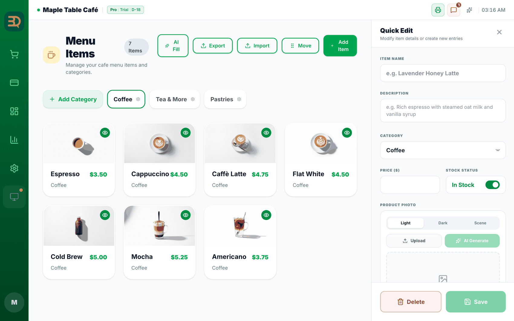
- Toque Manage (Gestionar) › Menu Items (Artículos del menú) en la barra lateral izquierda. Arriba a la derecha verá los botones AI Fill (IA Rellenar), Export (Exportar), Import (Importar), "Move" y Add Item (Agregar artículo); Add Category (Agregar categoría) está en el extremo izquierdo de la fila de pestañas de categorías.
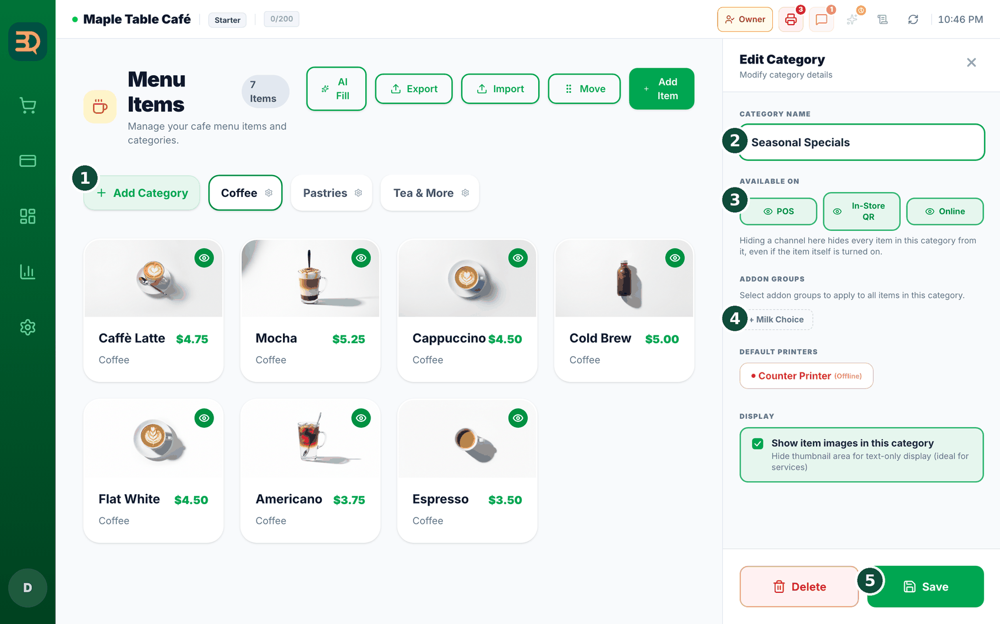
- Primero cree una categoría. Toque Add Category (Agregar categoría), escriba un nombre como "Café" y guarde. (Necesita al menos una categoría para que funcione Add Item (Agregar artículo)).
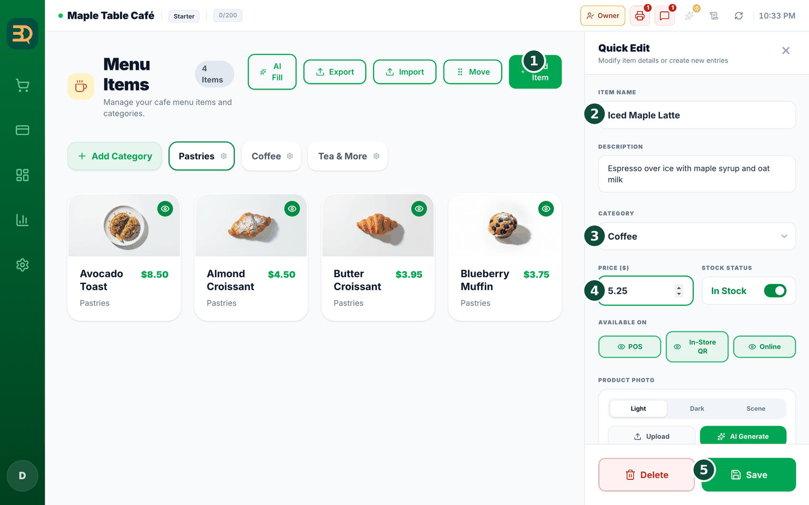
- Toque Add Item (Agregar artículo). Se abre un panel lateral. Complete: Item Name, Description (opcional), Category, Price y Stock Status (el interruptor "In Stock").
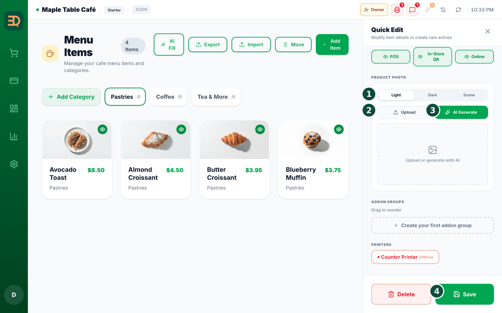
- Agregue una foto. Toque Upload (Subir) para usar su propia imagen, o AI Generate (IA Generar) para crear una.
- Toque Save (Guardar). El producto aparece en su categoría.
¿Qué es una categoría? Es simplemente un grupo, como una carpeta. Mantiene su menú ordenado para que los productos sean fáciles de encontrar.
Grupos de opciones y plantillas
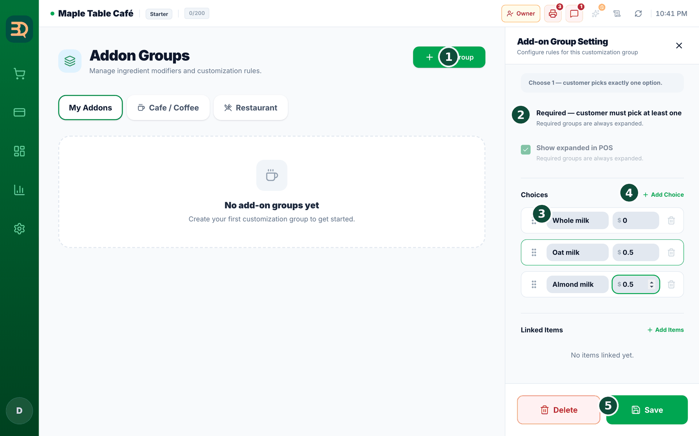
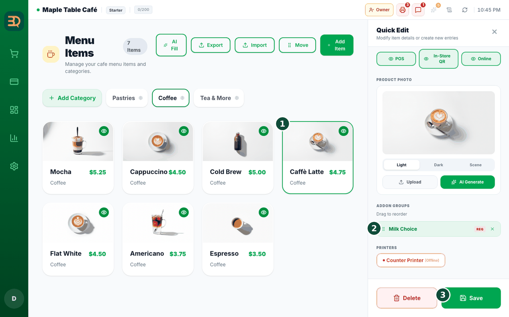
- ¿Quiere ofrecer opciones? Asigne grupos de opciones (como leche o tamaño) en el panel del producto. Los grupos se crean con Add Group (Agregar grupo): elija un tipo (Single / Multi / Quantity) y agregue opciones con precios.
Grupos de opciones listos para usar. ¿No quiere crear grupos desde cero? En el panel del producto, toque Add from Presets para abrir la Preset Library: grupos listos como Milk, Size (Tamaño), Temperature y Sweetness para cafeterías, o Spice, Protein y Sides para restaurantes. Toque una tarjeta para agregar el grupo completo a su menú; muestra la etiqueta Added una vez agregado.
Fotos con IA y AI Fill
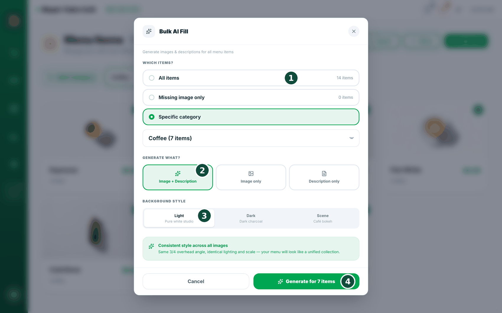
- ¿Quiere una foto más bonita? En el panel del producto, elija un estilo de fondo (Light / Dark / Scene) y toque AI Generate (IA Generar). Crea 3 fotos; toque la que le guste.
Haga todo el menú de una vez con "AI Fill". Toque AI Fill (IA Rellenar), elija qué productos (All items / Missing image only / Specific category), elija qué crear (Image + Description / Image only / Description only), elija un estilo de fondo (Light — Pure white studio / Dark — Dark charcoal / Scene — Café bokeh) y luego toque Generate for N items. Revise los resultados y toque Apply (Aplicar).
Para presumir
La IA puede escribir todo su menú por usted, e incluso crear las fotos de los productos. Así empieza con un menú completo en segundos, no con una pantalla en blanco.
Importar y exportar
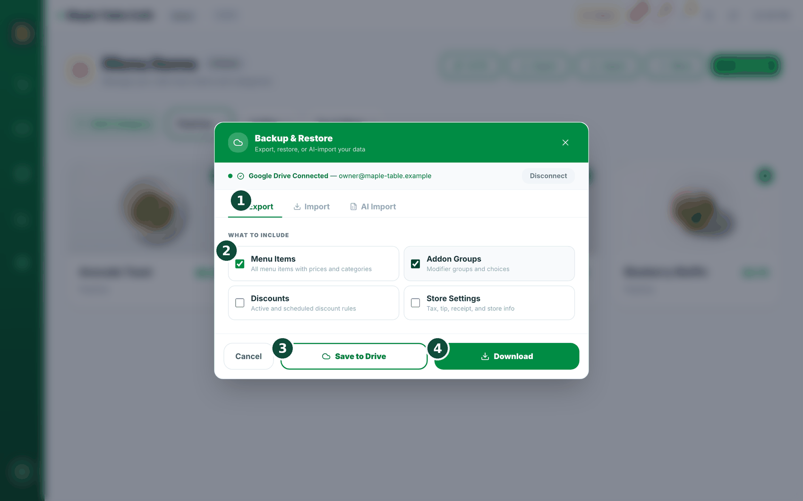
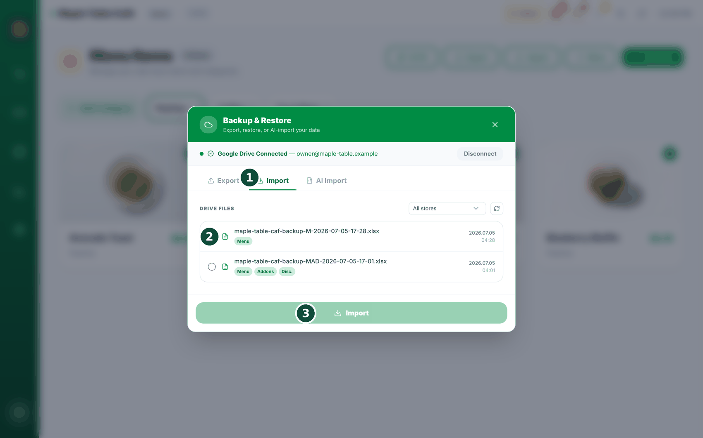
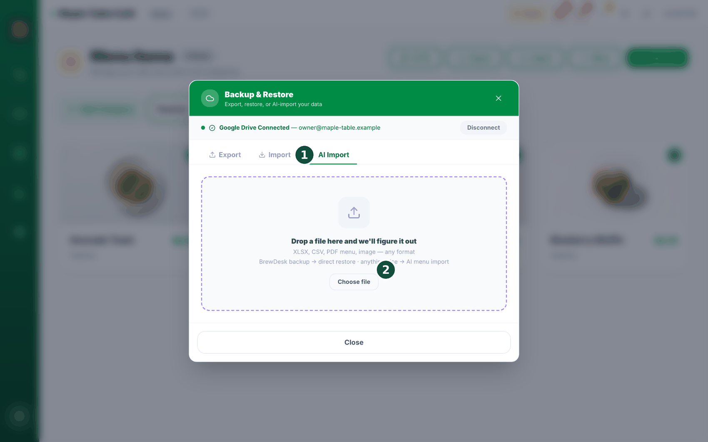
- ¿Ya tiene un menú en una hoja de cálculo? Toque Import (Importar) para traerlo todo de una vez. Toque Export (Exportar) para descargar su menú como hoja de cálculo.
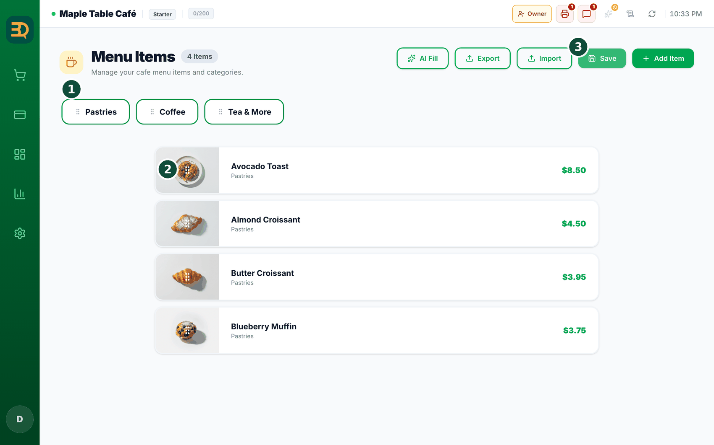
Temas relacionados
¿Necesita más ayuda?
Puede enviar un ticket de soporte desde la app en Settings › Support.